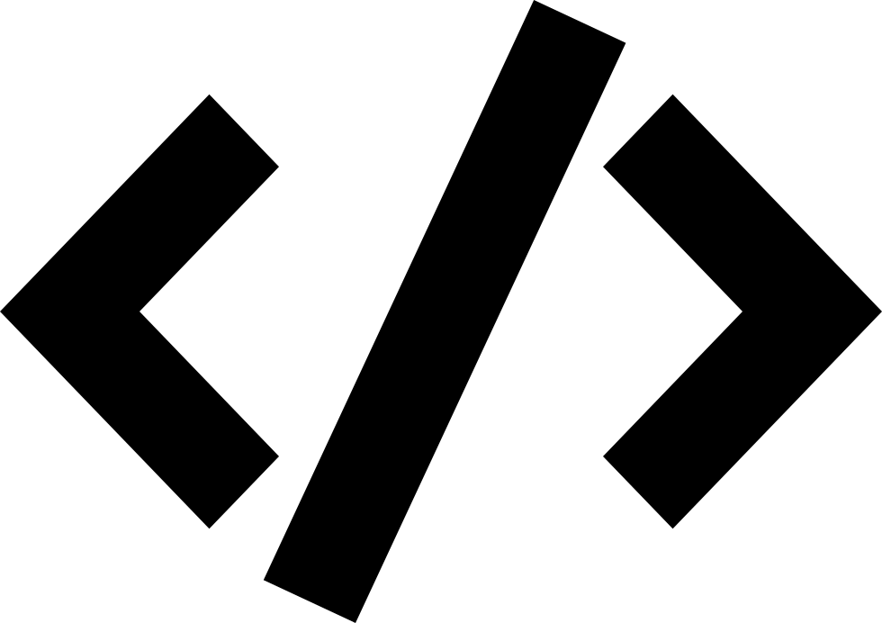

Mazharul Islam (মাজহারুল ইসলাম)
Recent News
| [May 24] I returned to Visa research this summer to address security and privacy issues of large language models. |
| [April 24] Our paper led by Majed got accepted to IEEE-Euro S&P! |
| [Feb 24] I passed my PhD proposal exam. I am PhD candidate now! |
| [Jan 24] My work Compact got accepted to PETs 2024. |
| [Sep 23] Excited to participate and be awarded student travel grant from saTML. Thanks sponsors and organizers! |
| [Sep 23] Awarded student research grants from UW-Madison. | [May 23] My last summer's internship work at Visa Research "Compact" is on ArXiv. Feedbacks and comments are welcome. |
| [Aug 23] Presented our work “Araña" at USENIX Security 23. Here is a TL;DR tweet I made about the paper. | [Jul 23] Got student travel grant from USENIX Security 23. Thanks to USENIX organizers and sponsors! | [May 23] I returned to Visa Research this summer to work on account recovery problem in passwordless user authentication! |
About
I am a Ph.D. candidate in computer science at the University of Wisconsin——Madison, and my research area is in applied cryptography and trustworthy machine learning. I am advised by Prof. Rahul Chatterjee, and I frequently collaborate with Prof. Thomas Ristenpart (from Cornell Tech) and Visa Research where I spent the last three summers as a staff research scientist intern.
I completed my M.Sc. in computer science also from University of Wisconsin-Madison in 2022, and before that completed my B.Sc. in computer science and engineering from Bangladesh University of Engineering and Technology (BUET) in 2017. My resume is available here.Research summary
My research vision is to develop privacy preserving secure systems. To achieve this, I design novel applied cryptography, machine learning techniques. I also use empiricism to comprehensively analyze the security of a system and to make secure design choices. My PhD thesis in particular focuses on solving security and privacy problems of online user authentication. Over the last seven years, I have been conducting research in diverse areas, as such before starting my PhD, I used to do research in the areas of computational biology, software security, and lightweight cryptography for edge devices.
Feel free to click on my ongoing and prior research projects below to know details.
User authenticationPublications: USENIX Security '22a, '22b, '23, two under submission
My PhD thesis is in the area of modern user authentication where I investigate how to safeguard users' online accounts against advanced attacks——all while carefully striking a right balance amongst privacy, usability, security, and deployability related crucial issues of the underlying authentication protocol. I have worked on the two most widely used online user authentication protocols: password-based, and passwordless as detailed in the following.Password-based user authentication: Passwords are the most popular, widely used, and convenient form of online user authentication. Unfortunately password based user authentication are prone to be vulnerable against advanced attacks. My work focuses on stopping attackers from launching password guessing attacks, and detecting malicious logins even against advanced attackers.
Passwordless user authentication: We have been observing a major industry led force in transitioning towards passwordless user authentication via passkeys. My ongoing work focuses on solving security problems of passkeys and FIDO2-based user authentication alike.Publications: PETs 2024, one ongoing work
I have also being working at the intersection of machine learning and cryptography to address the problem of secure training, and private inference. My recent work "compact" have addressed how to make complex activation functions used in machine learning secure multi-party computation (MPC) friendly. Currently I working on addressing securiy and privacy issues of autoregssive large language moels using cryptographic techniques.
Publications: BMC Genomics 2020, Bioinformatics journal 2022
Before starting my PhD, I used to work in the area of computation biology. I developed a dynamic programming based approach to estimate statistically consistent species tree from gene trees via maximizing the triplet consistency score. My another work involved developing a probabilistic method for filling genomic sequence gaps for short sequence reads.
My Master's thesis in BUET was related to security. It focused on developing lightweight cryptography for edge devices (published in MobiQuitous 2019)
Education
Aug 2020 - Present
Aug 2020 - May 2022

Jul 2012 - Feb 2017
Work Experience
July 2020 - Present
Supervisor(s): Prof. Rahul Chatterjee (Advisor) , Prof. Thomas Ristenpart
Working on enhancing security of password based authentication without sacrificing their usability
May 2024 - August 2024
Visa Research, Identity and Authentication Group , Foster City, CA.
Team members: Dr. Coby Wang (Mentor), and Dr. Sunpreet S. Arora
Addressing security and privacy issues of large language models using cryptographic techniques.
May 2023 - August 2023
Visa Research, Palo Alto, CA.
Team members: Dr. Coby Wang (Mentor), and Dr. Sunpreet S. Arora
Developing solutions to account recovery problem in passwordless user authentication.
May 2022 - August 2022
Visa Research, Systems Security Group , Palo Alto, CA.
Team members: Dr. Maliheh Shirvanian (Mentor), Dr. Peter Rindel, and Dr. Sunpreet S. Arora
During the internship, I worked on designing multi-party computation (MPC) friendly complex non-linear functions used in deep neural networks.
Jul. 2017 - Jun. 2019
United International University (UIU), Dhaka, Bangladesh
Department of Computer Science and Engineering (CSE)
I was the primary instructor for undergraduate level theory courses. Throughout three years I designed and instructed the following undergraduate level courses to more than 300 students:
1. CSE-477: Network Security (Summer-17, Spring-18, Summer-18, Fall-18)
2. CSE-315: Data communications (Spring-18, Summer-18)
May 2017 - Jul. 2017
iPay Systems Ltd (an e-wallet and secure payment platform based company), Dhaka. Bangladesh
Supervisor: Tahmid Tanzim
1. Designed contact search, profile settings, and money transaction pages into the existing code base using Angular JS - 1.2
2. I developed a firewall manager from scratch on top of a Linux program named iptables using Angular JS-1.2 as frontend and Django as backend. The application was designed to help the network administrators to navigate and manage firewall rules with ease (similar to Cisco firewall manager).
Publications
[1] Mazharul Islam, Sunpreet S. Arora, Rahul Chatterjee, Ke Coby Wang
“Detecting Compromise of Remotely Backed up Cryptographic Credentials" (title changed for anonymity)
PDF, Under review.
[2] Mazharul Islam, Marina Sanusi Bohuk, Thomas Ristenpart, Rahul Chatterjee
“Detecting Malicious logins in the Presence of Adaptive Attackers in Real Time" (title changed for anonymity)
PDF, Under review.
[3] Mazharul Islam, Sunpreet S. Arora, Rahul Chatterjee, Peter Rindal, Maliheh Shirvanian
“Compact: Approximating Complex Activation Functions for Secure Computation".
PDF, Proceedings on Privacy Enhancing Technologies (PETs), 2024
[4] Mazharul Islam*, Marina Sanusi Bohuk*, Paul Chung, Thomas Ristenpart, Rahul Chatterjee (*co-first authors)
“Araña: Discovering and Characterizing Password Guessing Attacks in Practice"
USENIX Security 2023, Acceptance rate = 29%.
PDF,

Source Code
Slides
BibTeX
Citation
@inproceedings {islamArayna23,author = {Mazharul Islam and Marina Sanusi Bohuk and Paul Chung and Thomas Ristenpart and Rahul Chatterjee},
title = {{Ara\~{n}a: Discovering and Characterizing Password Guessing Attacks in Practice}},
booktitle = {32nd USENIX Security Symposium (USENIX Security 22)},
year = {2023},
isbn = {},
address = {Anaheim, California, USA},
pages = {1867--1884},
url = {},
publisher = {USENIX Association},
month = aug,
}
[5] Marina Sanusi Bohuk, Mazharul Islam, Suleman Ahmad, Michael Swift, Thomas Ristenpart, Rahul Chatterjee
“Gossamer: Securely Measuring Password-based Logins"
USENIX Security 2022, Acceptance rate = 17.2%.
PDF,
Source Code, Media Coverage: USENIX ;login:
BibTeX
Citation
@inproceedings {281408,author = {Marina Sanusi Bohuk and Mazharul Islam and Suleman Ahmad and Michael Swift and Thomas Ristenpart and Rahul Chatterjee},
title = {Gossamer: Securely Measuring Password-based Logins},
booktitle = {31st USENIX Security Symposium (USENIX Security 22)},
year = {2022},
isbn = {978-1-939133-31-1},
address = {Boston, MA},
pages = {1867--1884},
url = {https://www.usenix.org/conference/usenixsecurity22/presentation/sanusi-bohuk},
publisher = {USENIX Association},
month = aug,
}
[6] Bijeeta Pal, Mazharul Islam, Marina Sanusi Bohuk, Nick Sullivan, Luke Valenta, Tara Whalen, Christopher Wood, Thomas Ristenpart,
Rahul Chattejee
"Might I Get Pwned: A Second Generation Compromised Credential Checking Service"
USENIX Security 2022, Acceptance rate = 17.2%.
PDF,
Source Code, Media Coverage: The Cloudflare Blog.
BibTeX
Citation
@inproceedings {279998,author = {Bijeeta Pal and Mazharul Islam and Marina Sanusi Bohuk and Nick Sullivan and Luke Valenta and Tara Whalen and Christopher Wood and Thomas Ristenpart and Rahul Chatterjee},
title = {Might I Get Pwned: A Second Generation Compromised Credential Checking Service},
booktitle = {31st USENIX Security Symposium (USENIX Security 22)},
year = {2022},
isbn = {978-1-939133-31-1},
address = {Boston, MA},
pages = {1831--1848},
url = {https://www.usenix.org/conference/usenixsecurity22/presentation/pal},
publisher = {USENIX Association},
month = aug,
}
[7] Mazharul Islam, Sazzadur Rahaman, Na Meng, Behnaz Hassanshahi, Padmanabhan Krishnan, Danfeng (Daphne) Yao.
"Coding Practices and Recommendations of Spring Security for Enterprise Applications".
IEEE Secure Development Conference. Atlanta, GA, September 2020. Acceptance rate = 39%
PDF, Presentation Video
BibTeX
Citation
@INPROCEEDINGS{islamCoding2020,author={Islam, Mazharul and Rahaman, Sazzadur and Meng, Na and Hassanshahi, Behnaz and Krishnan, Padmanabhan and Yao, Danfeng Daphne},
booktitle={2020 IEEE Secure Development (SecDev)},
title={Coding Practices and Recommendations of Spring Security for Enterprise Applications},
year={2020},
volume={},
number={},
pages={49-57},
doi={10.1109/SecDev45635.2020.00024}
}
[8] Majed Almansoori, Mazharul Islam, Saptarshi Ghosh, Mainack Mondal, Rahul Chatterjee
"The Web of Abuse: A Comprehensive Analysis of Online Resource in the Context of Technology-Enabled Intimate Partner Surveillance".
IEEE EuroS&P 2024, Vienna, Austria
PDF,
BibTeX
Citation
@INPROCEEDINGS{almansooriweb,author={Almansoori, Majed and Islam, Mazharul and Ghosh, Saptarshi and Mondal, Mainack and Chatterjee, Rahul},
booktitle={2020 IEEE Secure Development (SecDev)},
title={The Web of Abuse: A Comprehensive Analysis of Online Resource in the Context of Technology-Enabled Intimate Partner Surveillance},
year={2024},
}
2020 and earlier
Mazharul Islam, Kowshika Sarker, Trisha Das, Rezwana Reaz, Md. Shamsuzzoha Bayzid
STELAR: a statistically consistent coalescent-based species tree estimation method by maximizing triplet consistency".
BMC Genomics 21, 136 (2020). Impact Factor: 3.9
PDF,
Source Code
BibTeX
Citation
@article{islam2020stelar,title={{STELAR: A statistically consistent coalescent-based species tree estimation method by maximizing triplet consistency}},
author={Islam, Mazharul and Sarker, Kowshika and Das, Trisha and Reaz, Rezwana and Bayzid, Md Shamsuzzoha},
journal={BMC Genomics},
volume={21},
number={1},
pages={1--13},
year={2020},
publisher={BioMed Central}
}
Sumit Tarafder, Mazharul Islam, Swakkhar Shatabda, Atif Rahman
Figbird: a probabilistic method for filling gaps in genome assemblies".
Bioinformatics, Volume 38, Issue 15, 1 August 2022, Pages 3717–3724.
Impact Factor: 6.9
PDF,
Source Code
BibTeX
Citation
@article{tarafder2022figbird,title={Figbird: a probabilistic method for filling gaps in genome assemblies},
author={Tarafder, Sumit and Islam, Mazharul and Shatabda, Swakkhar and Rahman, Atif},
journal={Bioinformatics},
volume={38},
number={15},
pages={3717--3724},
year={2022},
publisher={Oxford University Press}
}
Mazharul Islam, Novia Nurain , Mohammad Kaykobad , Sriram Chellappan , A. B. M. Alim Al Islam
"HEliOS: huffman coding based lightweight encryption scheme for data transmission".
Proceedings of the 16th EAI International Conference on Mobile and Ubiquitous Systems: Computing, Networking and ServicesNovember 2019 (MobiQuitous '19), Pages 70–79. H-index: 40, Acceptance Rate = 30%.
PDF Presentation Slides
BibTeX
Citation
@inproceedings{islam2019helios,title={{HEliOS: huffman coding based lightweight encryption scheme for data transmission}},
author={Islam, Mazharul and Nurain, Novia and Kaykobad, Mohammad and Chellappan, Sriram and Islam, ABM Alim Al},
booktitle={Proceedings of the 16th EAI International Conference on Mobile and Ubiquitous Systems: Computing, Networking and Services},
pages={70--79},
year={2019}
}
Mazharul Islam, MD. Nazmuddoha Ansary, Novia Nurain, Salauddin Parvez Shams, A. B. M. Alim Al Islam
A Sweet Recipe for Consolidated Vulnerabilities: Attacking a Live Website by Harnessing a Killer Combination of Vulnerabilities for Greater Harm".
2018 5th International Conference on Networking, Systems and Security (NSysS)
PDF
BibTeX
Citation
@INPROCEEDINGS{8631373,author={Islam, Mazharul and Ansary, MD. Nazmuddoha and Nurain, Novia and Shams, Salauddin Parvez and Alim Al Islam, A. B. M.},
booktitle={2018 5th International Conference on Networking, Systems and Security (NSysS)},
title={A Sweet Recipe for Consolidated Vulnerabilities: Attacking a Live Website by Harnessing a Killer Combination of Vulnerabilities for Greater Harm},
year={2018},
volume={},
number={},
pages={1-9},
doi={10.1109/NSysS.2018.8631373}}
Miscellaneous
- My wife Salsabil Arabi is also a graduate student at UW-Madison. Her research interest is in the area of data science, machine learning, and she trains models to predict breakthrough results in medical science in their early stage.
- In free time, I like road tripping and visiting national/state parks (we have so many in Wisconsin!). My goal is to do camping in all 63 national parks in the USA. Thus far my wife and I have visited ony three and plan to visit all within next few years!